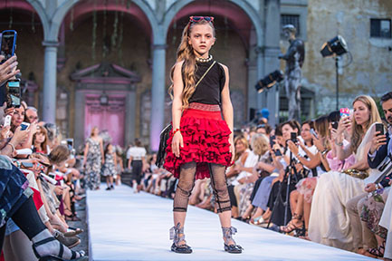

Fashion Kids is a Europe company located in Paris. It is owned by a couple who are millionaires and loves kids. They decided to have a fashion company for fashionable kids, founded by Rick Lopez in 1978.
It appeals more to kids because is meant to be for them. We make our clothes colorful and with great design, to attract kids eyes and their families. Four adjectives to describe Fashion Kids are; colorful, joyful, unique and affordable. In this website you will find an energetic and joyful way to explore clothes for your kids.